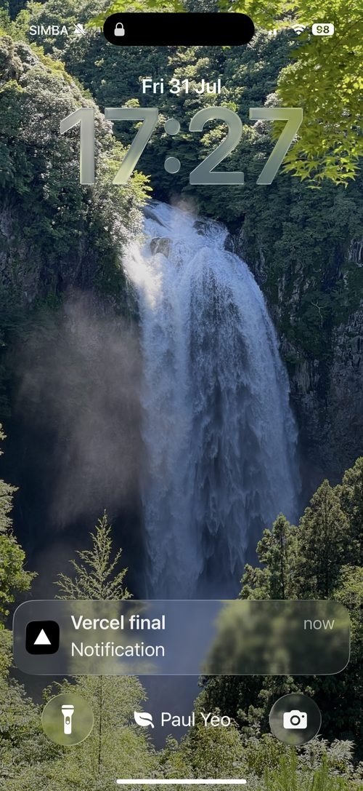
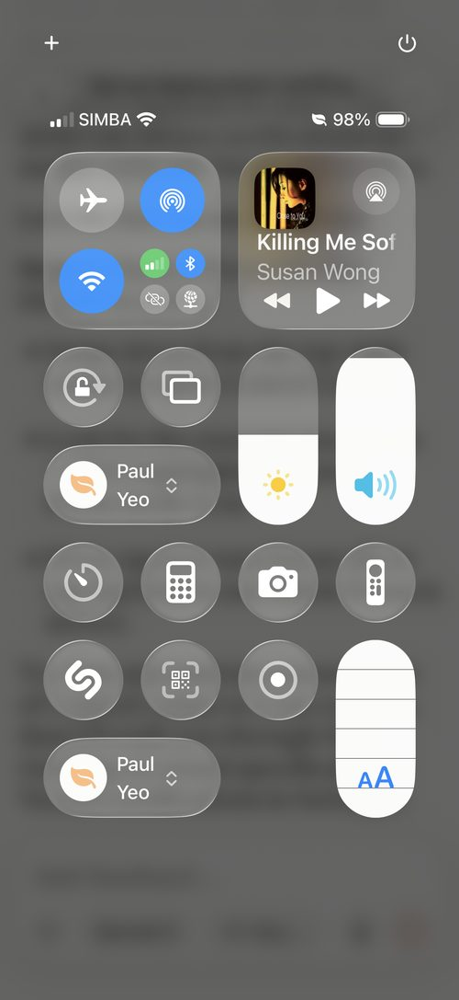
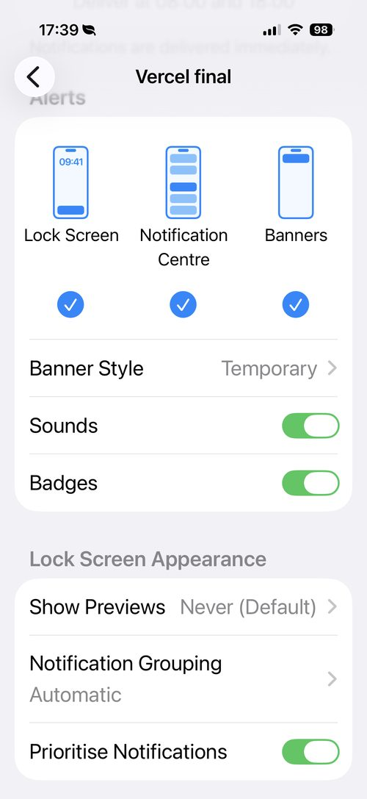
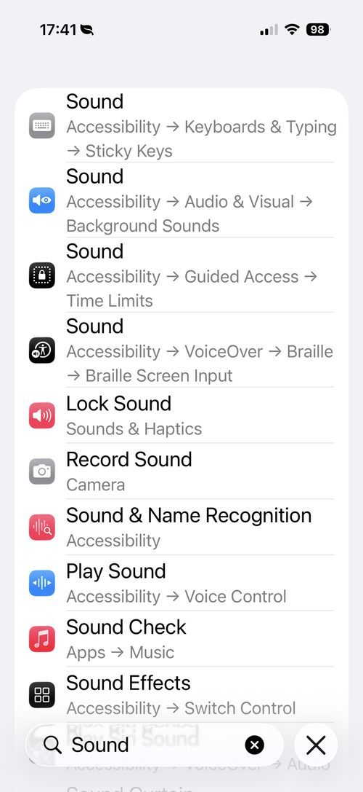
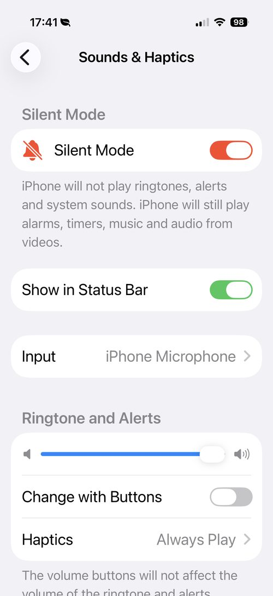
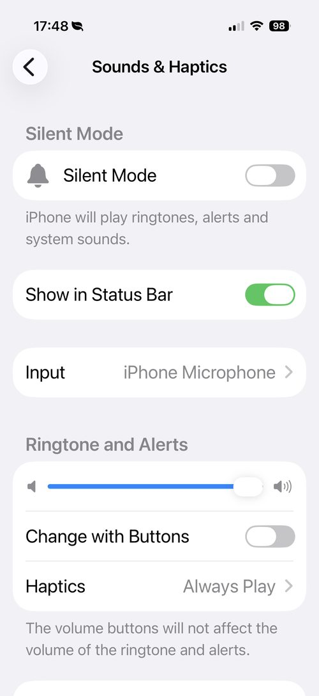
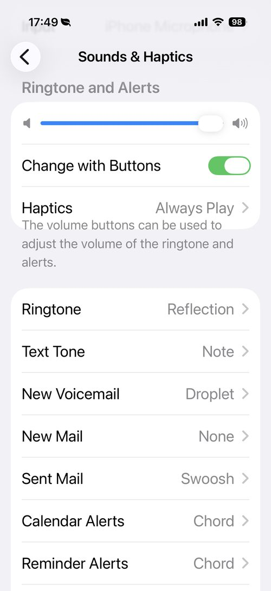

Every time I ask Claude to deploy a report to my Vercel page, I want to actually know when it's done — not stumble across it later. But my phone kept receiving the "page updated" notification completely silently. Here's exactly how Claude walked me through finding and fixing it, one screenshot at a time. 每次我让Claude把报告部署到我的Vercel页面，我都想真正知道它什么时候完成——而不是过后才偶然发现。但我的手机收到"页面已更新"的通知时一直是静音的。以下是Claude如何一步步带我找出问题并修复它的完整记录，每一步都有截图。
I asked: "When I ask Claude deploy report to VERCEL page, when I receive the VERCEL notification, page updated, how can I set the notification with sound on or alarm sound, so I can check the page." I sent a screenshot of my lock screen showing the notification had arrived — but with no sound at all. 我问："当我让Claude部署报告到VERCEL页面时，我收到VERCEL的'页面已更新'通知，我该如何设置通知带声音或闹铃声，这样我才能去查看页面。"我发了一张锁屏截图，显示通知已经到了——但完全没有声音。

My lock screen — a "Vercel final" notification had just arrived, but I never heard a sound. I also noticed a bell-with-a-slash icon next to my carrier name (SIMBA), which is usually a clue that a Focus mode is silencing things.我的锁屏——一条"Vercel final"通知刚到，但我完全没听到声音。我还注意到运营商名称（SIMBA）旁边有一个带斜线的铃铛图标，这通常说明某个"专注模式"正在让通知静音。
Claude's first move was to check the obvious suspect: a Focus mode. It asked me to open Control Centre and look for a highlighted crescent-moon icon. Claude的第一步是先排查最明显的嫌疑：专注模式。它让我打开控制中心，看看有没有一个高亮的月牙图标。

No Focus/moon icon was lit up here — so Do Not Disturb wasn't the cause. Claude moved on to check the Vercel app's own notification settings next.这里没有任何专注模式/月牙图标被点亮——所以"请勿打扰"不是原因。Claude接着去检查Vercel应用本身的通知设置。
Next, Claude had me go to Settings → Notifications → Vercel to check whether Sounds and Banners were switched on for that specific app. 接着，Claude让我去"设置→通知→Vercel"，检查这个应用的"声音"和"横幅"是否已经打开。

Good news and a puzzle at the same time: Sounds was already ON, Banners/Lock Screen/Notification Centre were all checked, and it said "delivered immediately." The app itself was set up correctly — so the real cause had to be somewhere else on the phone.好消息也是一个谜团：声音早已是打开的，横幅/锁屏/通知中心也都勾选了，而且写着"立即送达"。应用本身的设置是对的——所以真正的原因一定在手机的其他地方。
Claude asked me to check the Ringtone and Alert volume slider in Settings → Sounds & Haptics. I searched "Sound" in the Settings app first, which brought up a confusing list of search results rather than the actual settings page. Claude让我去"设置→声音与触感"检查铃声和提醒的音量滑块。我先在设置里搜索了"Sound"，结果跳出来的是一堆容易让人困惑的搜索结果，而不是真正的设置页面。

I asked "Click where?" — fair question, since this is just a search results list. Claude pointed me to tap "Lock Sound" in the list, which is filed under Sounds & Haptics and drops straight into the real settings page.我问"要点哪里？"——这个问题问得没错，因为这只是一份搜索结果列表。Claude让我点列表里的"锁定声音"，它归在"声音与触感"下面，点了之后会直接跳到真正的设置页面。
This is where the real culprit showed up. 这时候真正的元凶出现了。

There it was — Silent Mode was switched ON (shown in red). The description even spelled it out: "iPhone will not play ringtones, alerts and system sounds." That's exactly why the Vercel notification arrived silently, no matter what the app's own settings said.就是它——静音模式是打开的（红色显示）。说明文字写得很清楚："iPhone将不会播放铃声、提醒和系统声音。"这正是为什么Vercel通知一直是静音送达的，不管应用本身的设置怎么设都没用。
Every individual app setting was correct. The one switch overriding all of them was Silent Mode itself — a phone-wide setting, not an app setting.每一个单独的应用设置其实都是对的。真正凌驾于一切之上的，是"静音模式"本身——这是一个整机层面的设置，不是某个应用的设置。
The fix was one tap: switch Silent Mode off. 解决方法只需要点一下：把静音模式关掉。
Silent Mode is now off, and the Ringtone and Alerts volume is turned up too. From here on, a Vercel deployment notification should come through with an actual sound — no more silently checking my lock screen wondering if the page went live.现在静音模式已经关闭，铃声和提醒的音量也调高了。从现在起，Vercel部署通知应该会真正发出声音——再也不用盯着锁屏猜测页面是不是已经上线了。
Once the sound was working, my next question was simple: "How to increase the notification sound volume?" Claude pointed me back to the same Ringtone and Alerts slider — turns out mine was already sitting at around 85–90%, plenty loud. 声音能出来之后，我接着问了一个简单的问题："如何提高通知声音的音量？"Claude让我回到同一个"铃声与提醒"滑块——结果发现我的音量早就已经调到大概85–90%了，已经够大声了。

The Ringtone and Alerts slider was already turned up high, with Silent Mode confirmed off. Nothing more to fix here — but Claude suggested one extra convenience: turning on "Change with Buttons.""铃声与提醒"滑块本来就已经调得很高，静音模式也确认是关闭的。这里已经没什么好修的了——但Claude建议再加一个方便的功能："用按钮调节"。
I turned on "Change with Buttons," which lets the iPhone's physical side buttons control alert volume directly — no need to open Settings every time I want to adjust it. 我打开了"用按钮调节"，这样iPhone侧边的物理按键就能直接控制提醒音量——不用每次想调音量都跑去打开设置。

"Change with Buttons" switched on (green). Now the side volume buttons adjust alert loudness directly, any time — the last small convenience on top of the original fix."用按钮调节"已打开（绿色）。现在侧边音量键随时都能直接调整提醒音量的大小——在原本的修复之上，多了这一个小小的便利。
The lesson for next time: if a single app's notifications are silent but its own settings look fine, the cause is almost always a phone-wide switch — Focus mode, Silent Mode, or the alert volume — not the app itself. 下次的经验：如果某一个应用的通知是静音的，但它自己的设置看起来都没问题，原因几乎总是出在整机层面的开关上——专注模式、静音模式，或者提醒音量——而不是应用本身。
This article is part of my AI Tools series — practical guides for using AI technology in everyday life, written from the perspective of a 70-year-old beginner who is learning as he goes. 本文是我AI工具系列的一部分——从一个边学边做的70岁初学者的角度，撰写的关于在日常生活中使用AI技术的实用指南。